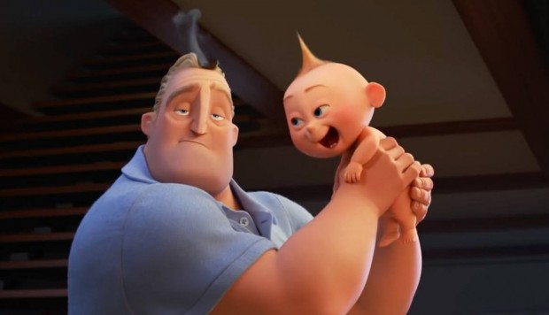
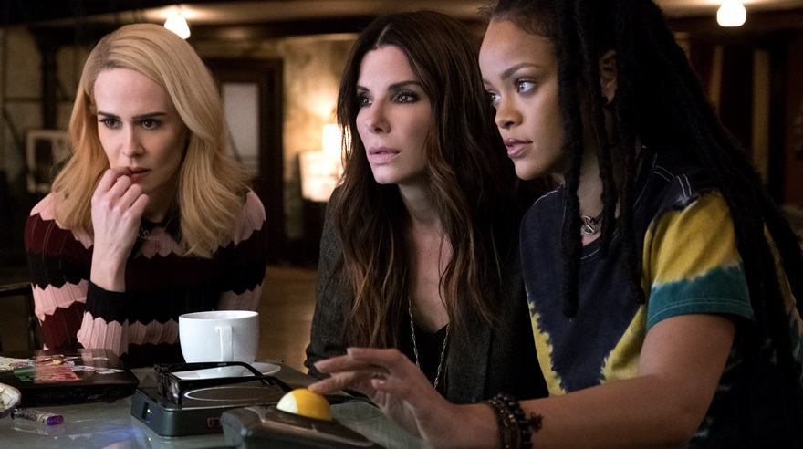
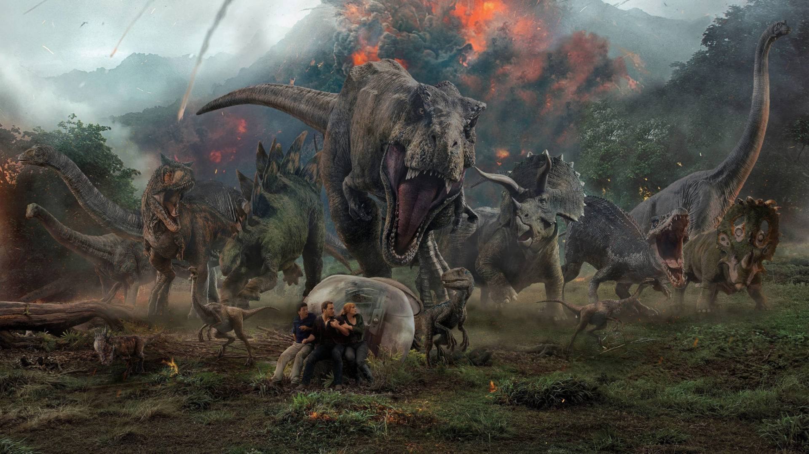
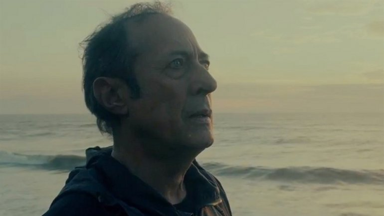

<div class="container-fluid">
    <div class="row">
        <div class="col-md-8 rounded bg-danger">
            <h2>Estrenos-Sinapsis</h2>
            <hr>
            <div class="row">
                <div class="col-md-6">
                    <div class="col-12">
                        <h3>Los Increibles 2</h3>
                        <figure class="pr-5 pl-5">
                            
                        </figure>
                        <p>En Los Increíbles 2, Helen (voz de Holly Hunter) es llamada para liderar una campaña que traiga de
                            vuelta a los superhéroes, mientras Bob (voz de Craig T. Nelson) circula entre las hazañas diarias
                            de un vida “normal” en casa con Violeta (voz de Sarah Vowell), Dash (voz de Huck Milner) y el
                            bebé Jack-Jack- cuyos superpoderes están a punto de ser descubiertos-. Su misión se descarrila
                            cuando un nuevo villano emerge con un plan brillante y peligroso que amenaza con destruir todo.
                            Pero los Parrs no se intimidan con ningún desafío, especialmente cuando Frozono (voz de Samuel
                            L. Jackson) está a su lado. Eso es lo que hace a esta familia tan Increíble.
                        </p>
                        <hr>
                    </div>
                    <div class="col-12">
                        <h3>Ocean's 8</h3>
                        <figure>
                            
                        </figure>
                        <p>Esta vez, las maestras del robo son mujeres. Debbie Ocean (Sandra Bullock) acaba de salir de la cárcel
                            y planea el robo del siglo. Junto a su mano derecha, Lou (Cate Blanchett), tiene la intención
                            de ejecutar un gran robo en la ciudad de Nueva York. Su objetivo será hacerse con el valioso
                            collar que llevará Daphne Kluger (Anne Hathaway) durante la Met Gala, el importante evento benéfico
                            anual que marca el inicio de la temporada en la industria, conocido por la asistencia de multitud
                            de estrellas y celebridades. Para llevar a cabo su plan, Debbie y Lou reclutarán a Nine Ball
                            (Rihanna), Amita (Mindy Kaling), Constance (Awkwafina), Rose (Helena Bonham Carter) y Tammy (Sarah
                            Paulson). Claro que, las sospechas de un agente de seguros (James Corden) pondrán en riesgo el
                            meticuloso plan trazado por la banda de atracadoras.</p>
                        <hr>
                    </div>
                </div>
                <div class="col-md-6">
                    <div class="col-12">
                        <h3>Jurassic World: El reino caído</h3>
                        <figure class="pr-5 pl-5">
                            
                        </figure>
                        <p>Tras cuatro años de abandono del complejo turístico Jurassic World, Isla Nublar sólo está habitada
                            por los dinosaurios supervivientes. Cuando el volcán de la isla entra en erupción, Owen (Chris
                            Pratt) y Claire (Bryce Dallas Howard) vuelven allí para rescatar a los dinosaurios de la extinción.
                            Owen va en busca de Blue, el raptor al que crió mientras que Claire, que ha empezado a valorar
                            a estas criaturas, se centra más en salvar al resto. Cuando llegan a la isla descubren una conspiración
                            que pretende llevar al planeta de nuevo a la era prehistórica.</p>
                        <hr>
                    </div>
                    <div class="col-12">
                        <h3>Animal</h3>
                        <figure>
                            
                        </figure>
                        <p>Un hombre de familia conservador que sufre una enfermedad mortal encuentra su única oportunidad de
                            sobrevivir en dos vagabundos, que le ofrecen darle el riñón que necesita a cambio de una casa.
                            Desesperado, el hombre acaba aceptando el trato, pero las reglas del juego comenzarán a cambiar.</p>
                        <hr>
                    </div>
                </div>
            </div>
        </div>
        <div class="col-md-4 rounded bg-info">
            <h2>Cine</h2>
            <div class="col-12">
                <h4>Blogs de cine</h4>
                <ol>
                    <li>El antepenúltimo mohicano</li>
                    <li>Cinéfagos</li>
                    <li>Cinemanía</li>
                    <li>Las horas perdidas</li>
                    <li>Filmin</li>
                    <li>Vaya cine</li>
                    <li>Cinetelia</li>
                    <li>Blog de cine</li>
                    <li>Cine en serio</li>
                    <li>Fotogramas</li>
                    <li>Cine crítico</li>
                    <li>YouRocket</li>
                    <li>Cine3</li>
                </ol>
            </div>
            <hr>
            <div class="col-12">
                <h4>☆Mas populares esta semana☆</h4>
                <table class="table">
                    <thead>
                        <tr>
                            <th scope="col">Pelicula</th>
                            <th scope="col">Tomatometro</th>
                            <th scope="col">Audiencia</th>
                        </tr>
                    </thead>
                    <tbody>
                        <tr>
                            <td>Los Increibles 2</td>
                            <td>94%</td>
                            <td>88%</td>
                        </tr>
                        <tr>
                            <td>Ocean's 8</td>
                            <td>67%</td>
                            <td>49%</td>
                        </tr>
                        <tr>
                            <td>Tag</td>
                            <td>57%</td>
                            <td>72%</td>
                        </tr>
                        <tr>
                            <td>Solo: a Star Wars Story</td>
                            <td>71%</td>
                            <td>65%</td>
                        </tr>
                        <tr>
                            <td>Deadpool 2</td>
                            <td>82%</td>
                            <td>86%</td>
                        </tr>
                        <tr>
                            <td>Hereditary</td>
                            <td>91%</td>
                            <td>56%</td>
                        </tr>
                        <tr>
                            <td>Avengers: Infinity War</td>
                            <td>83%</td>
                            <td>91%</td>
                        </tr>
                        <tr></tr>
                    </tbody>
                </table>
                <p class="mt-3 parrafocentrado">Fuente: RottenTomatoes &reg</p>
                <hr>
            </div>
            <h3>Auspiciantes</h3>
            <div class="row">
                <figure class="col-4 my-auto hoverable">
                    
                </figure>
                <figure class="col-4 my-auto hoverable">
                    
                </figure>
                <figure class="col-4 my-auto hoverable">
                    
                </figure>
            </div>
        </div>
    </div>
</div>
</div>